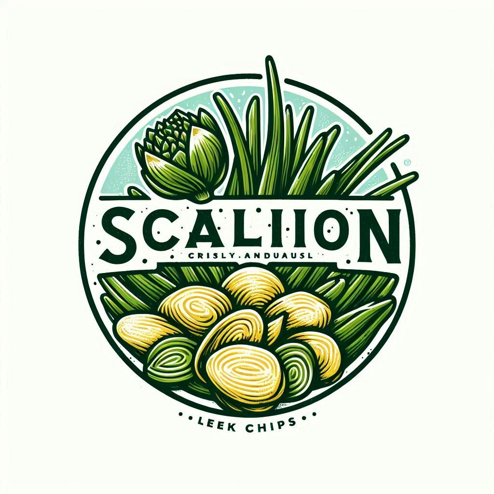
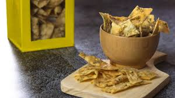
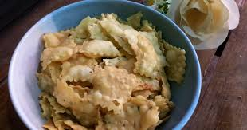

Bagian 1: Pengenalan
Keripik daun bawang adalah camilan yang semakin populer di kalangan masyarakat yang peduli kesehatan. Terbuat dari daun bawang segar yang dipotong tipis dan digoreng hingga renyah, keripik ini tidak hanya lezat tetapi juga menawarkan berbagai manfaat kesehatan. Dengan teksturnya yang renyah dan rasa yang gurih, keripik daun bawang sering dijadikan alternatif yang lebih sehat dibandingkan keripik kentang atau camilan lainnya yang tinggi kalori dan lemak jenuh. Selain itu, keripik ini juga mudah ditemukan di berbagai toko makanan sehat dan pasar tradisional.
Bagian 2: Kandungan Nutrisi
Keripik daun bawang mengandung berbagai nutrisi penting yang bermanfaat bagi tubuh. Daun bawang sendiri dikenal kaya akan vitamin A, yang penting untuk kesehatan mata dan sistem kekebalan tubuh. Selain itu, keripik ini juga mengandung vitamin C, yang berperan sebagai antioksidan untuk melawan radikal bebas dan meningkatkan kekebalan tubuh. Serat yang terdapat dalam daun bawang membantu menjaga kesehatan pencernaan dan mencegah sembelit. Kandungan antioksidan lain seperti quercetin dan kaempferol juga ditemukan dalam daun bawang, yang dapat membantu mengurangi risiko penyakit kronis seperti kanker dan penyakit jantung.
Bagian 3: Manfaat Kesehatan
Mengkonsumsi keripik daun bawang dapat memberikan berbagai manfaat kesehatan. Pertama, kandungan serat dalam keripik ini membantu meningkatkan kesehatan pencernaan dengan mempromosikan gerakan usus yang teratur dan mencegah sembelit. Kedua, vitamin A yang terdapat dalam daun bawang penting untuk menjaga kesehatan mata dan mencegah degenerasi makula seiring bertambahnya usia. Ketiga, vitamin C yang berfungsi sebagai antioksidan membantu meningkatkan sistem kekebalan tubuh, sehingga Anda lebih tahan terhadap infeksi dan penyakit. Selain itu, kandungan antioksidan lain dalam daun bawang, seperti quercetin, dapat membantu mengurangi peradangan dan risiko penyakit kronis seperti kanker dan penyakit jantung. Dengan begitu banyak manfaat yang ditawarkan, tidak heran jika keripik daun bawang menjadi pilihan camilan yang sehat dan lezat.
